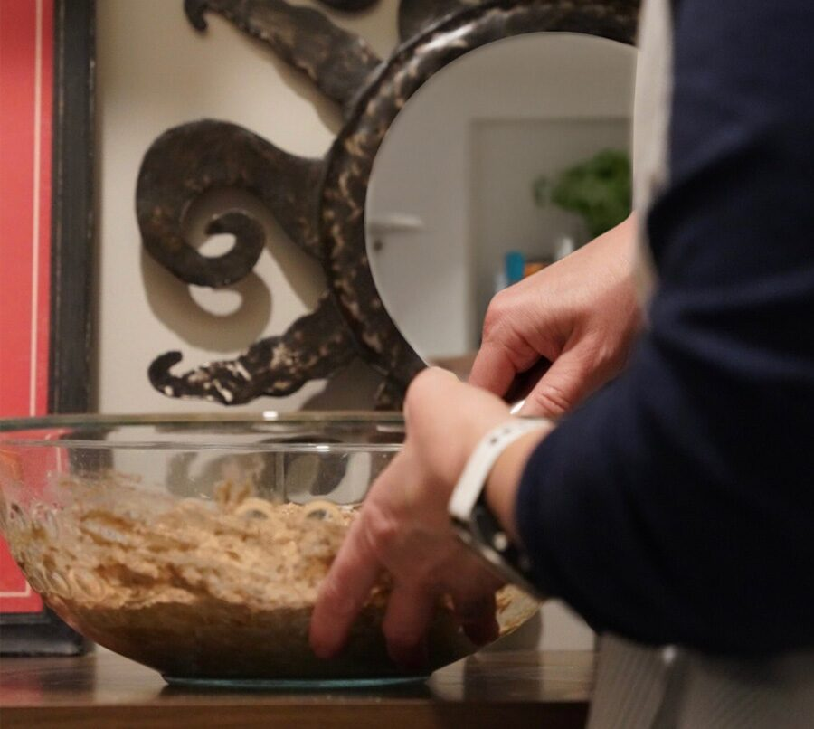
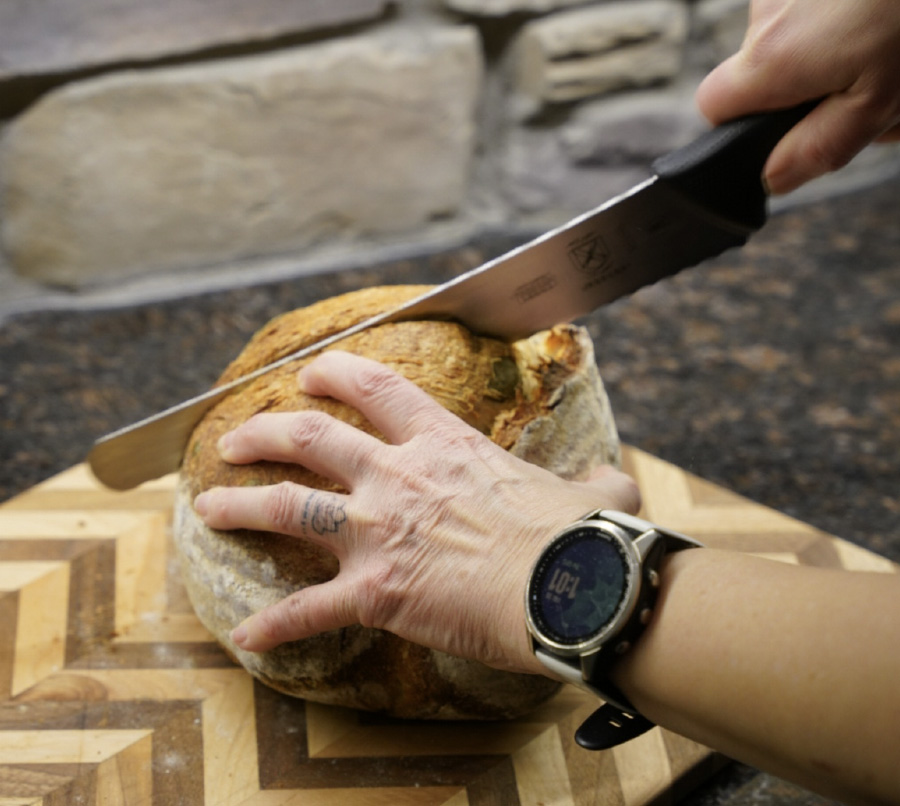
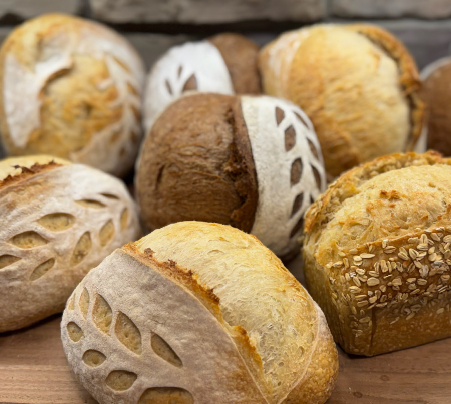

Craft & Purpose
Baking with Intent
Guided by the principles of Ikigai, I blend a passion for community connection with the ancient craft of sourdough. The Rustic Charm is a microbakery in Cottage Grove, Minnesota dedicated to the slow food movement. Every week, I release a limited drop of heritage-grain loaves, hand-shaped and slow-fermented. If my sourdough motivates you to slow down and connect, I’ve succeeded.

The Shared Table
Be a Good Human. Eat Real Food.
The mantra of "Be a Good Human. Eat Real Food." is my North Star. I developed this during a really hard time in my life, and it continues to be my guide. My career in community engagement taught me that while strategy is vital, nothing builds a genuine "human moment" like the experience of a shared meal. Connection is the heartbeat of my kitchen; I bake to provide a centerpiece for your next conversation.

Honest Ingredients
Nordic roots & healthy living
I honor traditional, Nordic-inspired methods using only simple, high-quality ingredients that nourish the body. As a lifelong athlete, I believe what we eat should fuel a vibrant life. I’m training now to age like Dick Van Dyke—staying active, joyful, and legendary enough to still be hitting the trails in my 90s. It starts with real food.

"You learn a lot about someone when you share a meal together."-Anthony Bourdain
How It Works: From Our Oven to Your Table
We bake in small, intentional batches to ensure every loaf is fresh with minimal waste.
Following our Nordic-inspired "drop" model is as simple as 1-2-3:
Scan the Menu
Every Sunday, we announce our weekly "drop" featuring our signature slow-fermented sourdough loaves and small-batch granola. Check our online storefront to see what’s coming out of the oven this week.
Pre-Order Early
Because we honor a traditional slow fermentation process, quantities are limited. Pre-orders go live on Sunday morning and close on Tuesday evening—be sure to grab your favorites before they sell out!
Pickup in Cottage Grove
Swing by our home-based bakery in Cottage Grove, Minnesota during your pre-selected Friday pickup window. We're proud to serve fresh sourdough bread to customers in Cottage Grove and the surrounding areas. Your bread will be fresh, hand-wrapped, and ready for your table.
Frequently Asked Questions
How do I keep products fresh?
BREAD: Think of your loaf like a sourdough-scented treasure! If you aren't going to devour it in the first few days, slice it up and tuck it into a sealed bag in the freezer. When the craving hits, just pop a frozen slice in the toaster—it'll taste just as fresh as the day you got it!
Personally, I'm so eager for that perfect toast that I slice and freeze my own bread on the very first day…it also prevents me from eating too much bread in one day!
GRANOLA: This stays perfectly crunchy and delicious in an airtight container (I love using a mason jar!) for up to 4 weeks. It might even last longer, but in our house, it's usually gone in less than a week!
Why do I need to pre-order?
Because good things take time (and math!). Pre-ordering helps our little bakery thrive by letting me map out my inventory, oven space, and slow fermentation time. It ensures there is a loaf with your name on it and ready to go.
How do I get my order?
Pickups happen on Fridays at my home in Cottage Grove, Minnesota (I'll send you the exact address once you order!).
When you check out, you'll pick a two-hour window between 7:30 AM and 6 PM. Just make sure to swing by before 6 PM, or your bread might get lonely!
Do you deliver?
I do not offer delivery as a regular practice. That being said, if you have a disability or another access barrier that prevents you from being able to pick up your bread, even temporarily, please email me to discuss alternate arrangements. I want to do my best to ensure that those who want bread can get it.
Do you ship?
I wish I could! However, state Cottage Food laws keep my loaves local—shipping isn't allowed.
Do you make gluten-free bread?
SHORT ANSWER: No.
LONG ANSWER: A truly gluten-free environment is required for safety, and since my kitchen is a flour-filled wonderland, I can't offer a certified GF space.
However, many of our gluten-sensitive friends find they can enjoy our sourdough! The long fermentation process helps break down gluten proteins. Read more from the Mayo Clinic on why sourdough is often gentler on the gut.
Keep in touch
Join our notifications list to receive our weekly drop info and other news